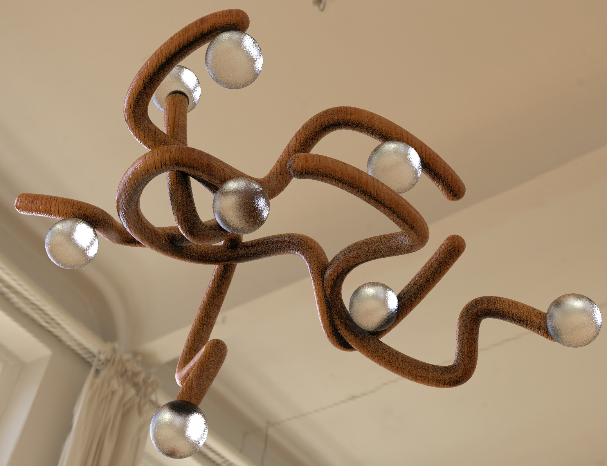
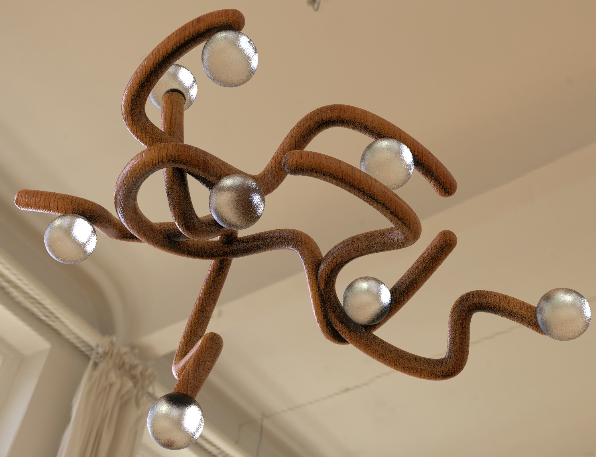

Vine Lamps
A pair of lamps composed of wooden vines with frosted glass orbs of light. Viewers’ eyes are drawn along the twisting paths of wood, and the soft light of the spheres.
Each of the glass shades is hand-blown and perched along curls of oak wood.